LYSI's Instagram cooled off after April's surge — Views 425.8K (-42.6%), Interactions 7.3K (-34.6%), Conversations 410 (-40.5%). It's still a massive channel, but the influencer drumbeat slowed (3 collabs in May vs 4 in April) and brand-owned engagement softened. Reach actually grew (+7.3%) — viewers are wider, but spending less time/interacting less. Time to re-energize creative.
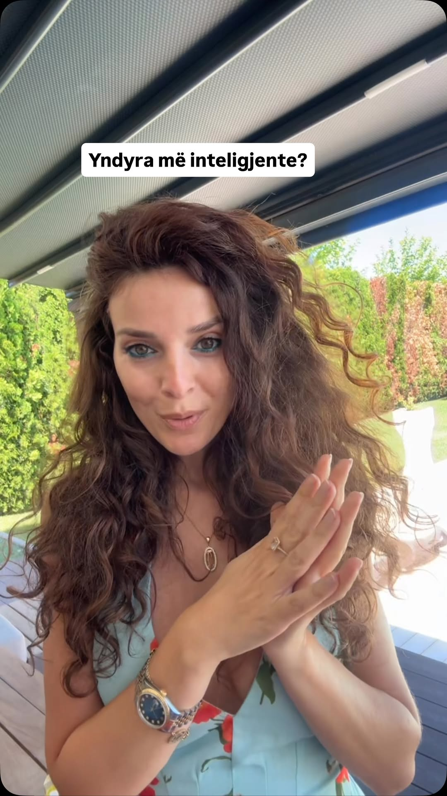
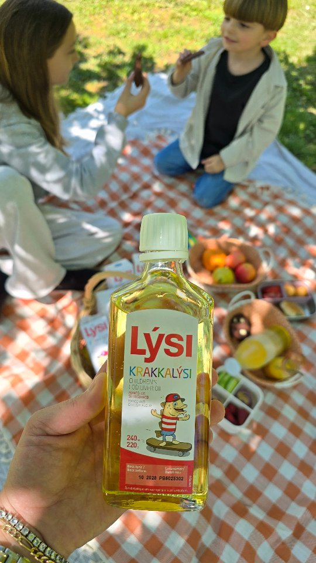
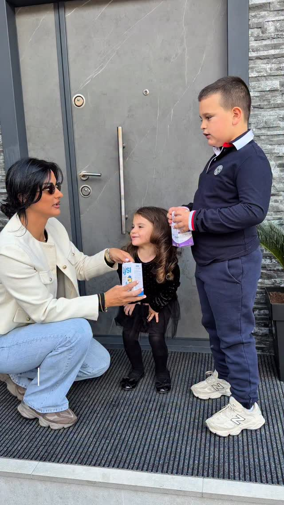
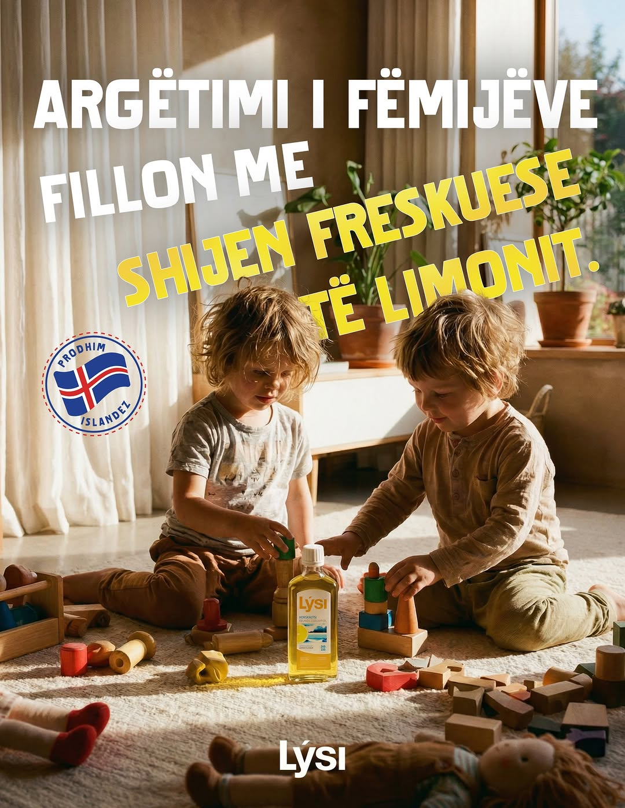
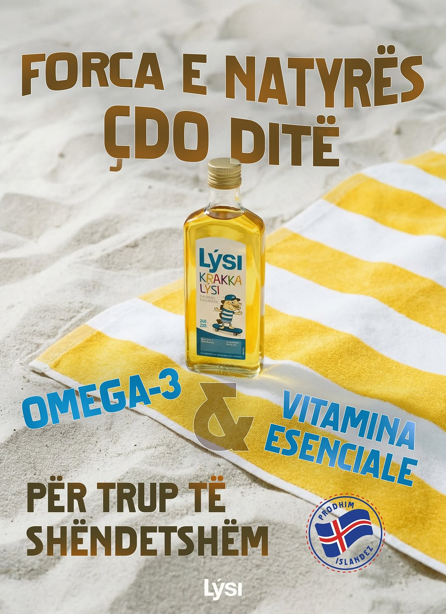
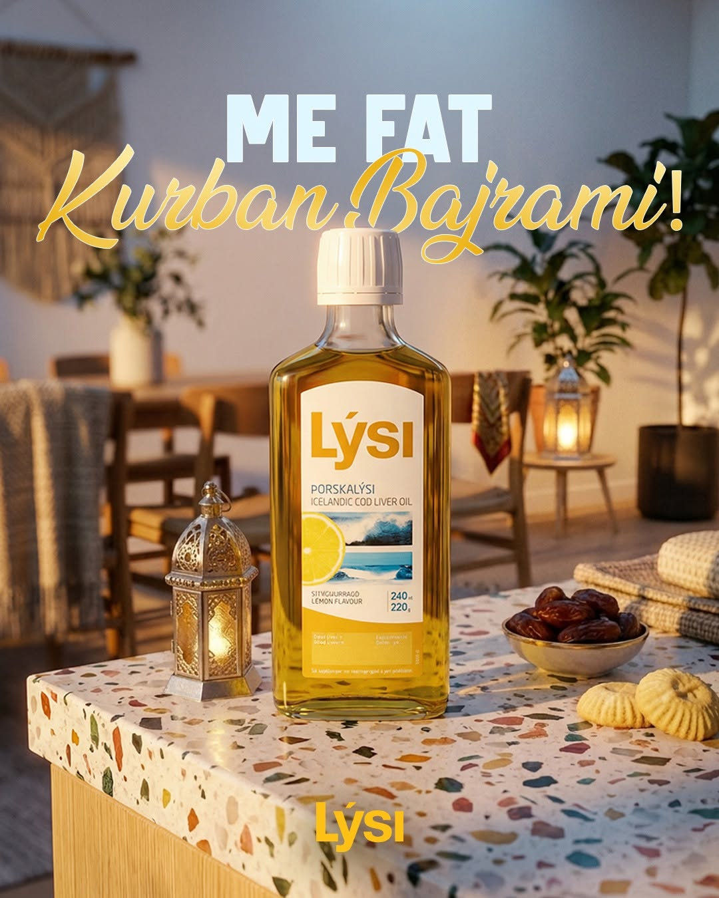
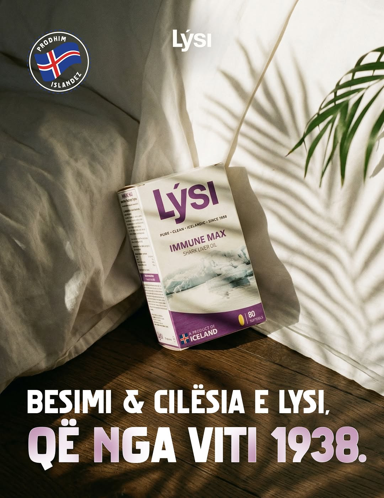
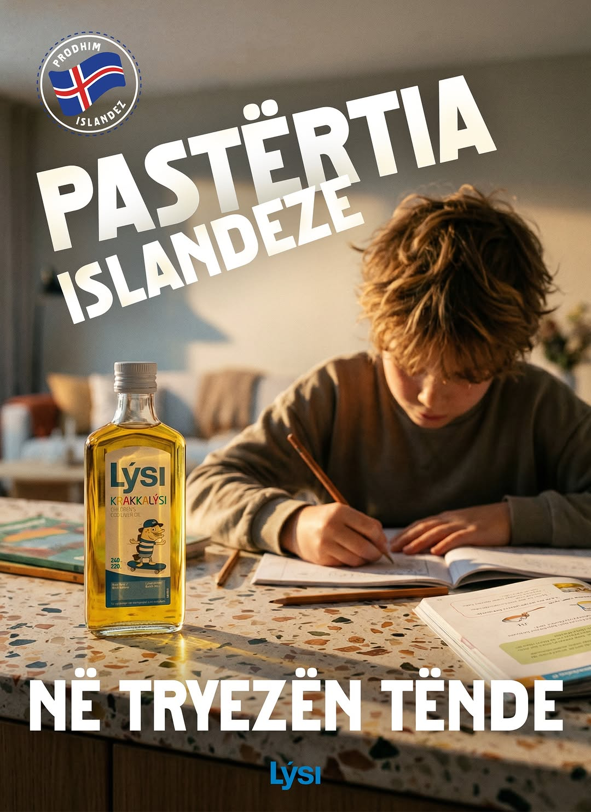
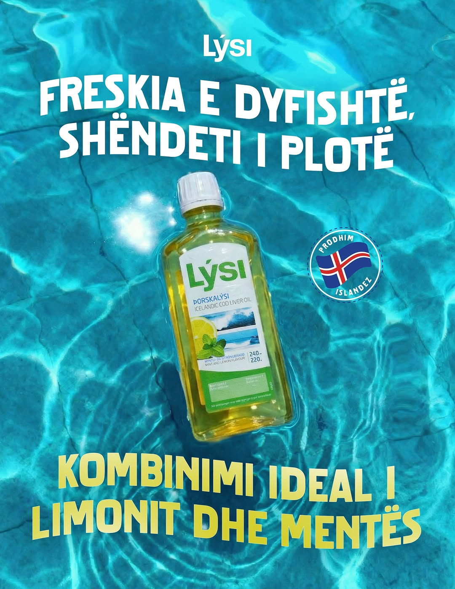
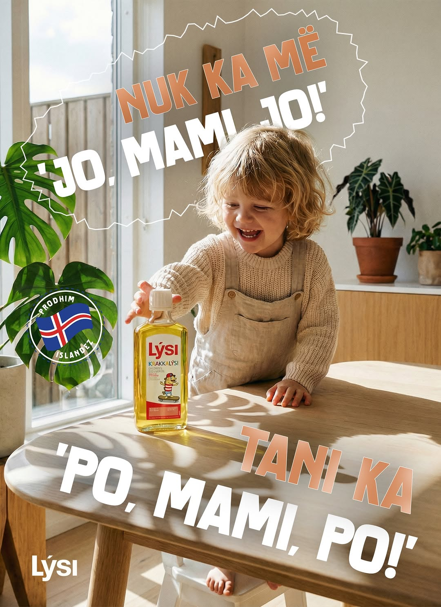
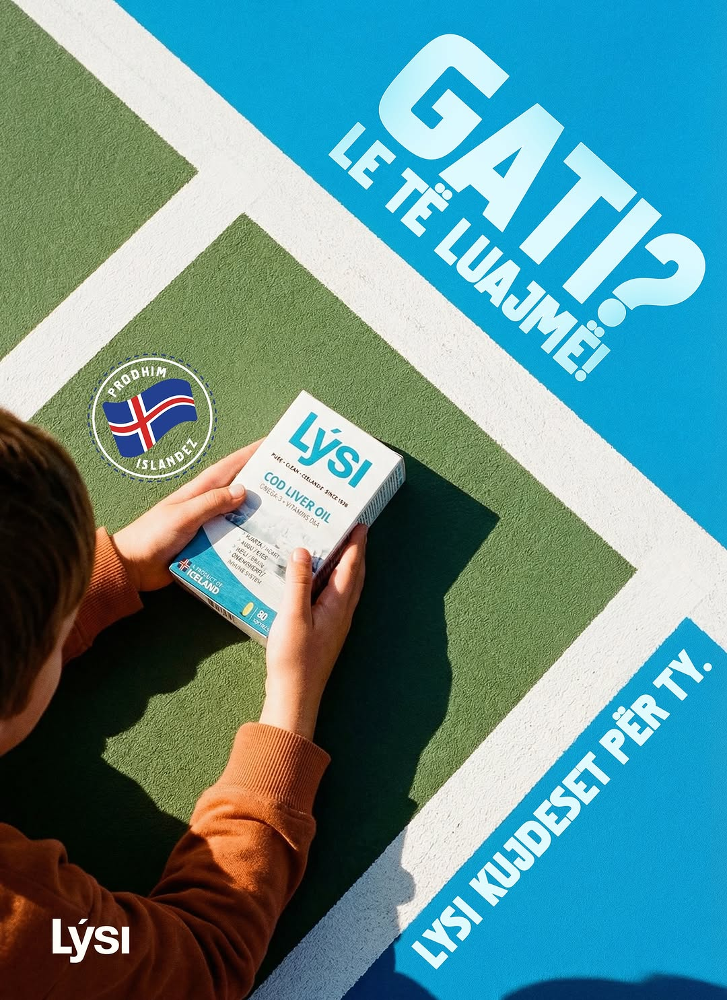
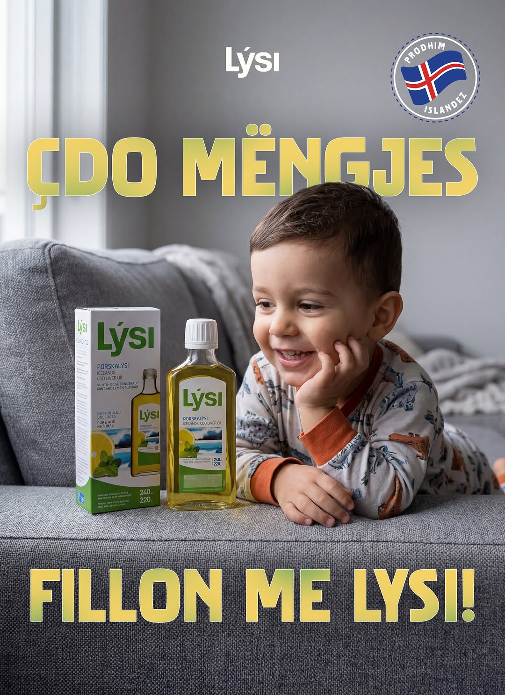
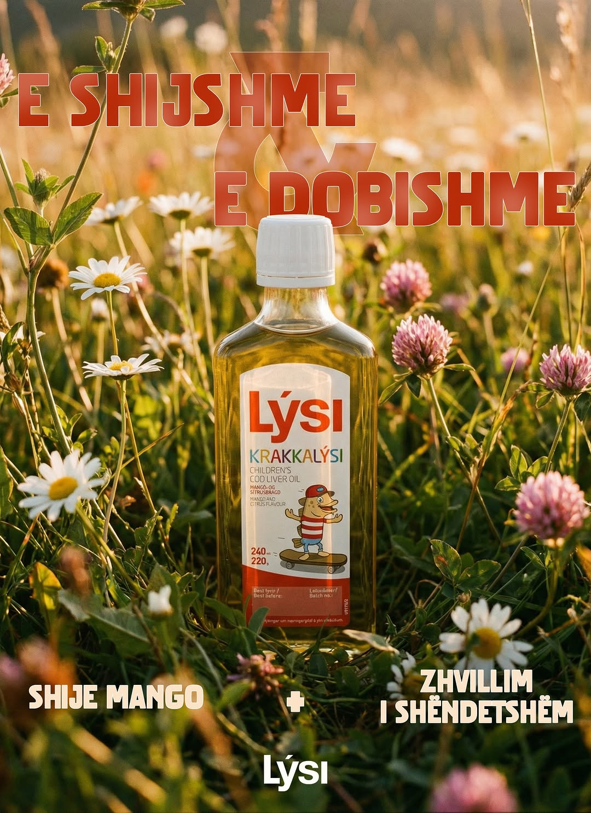
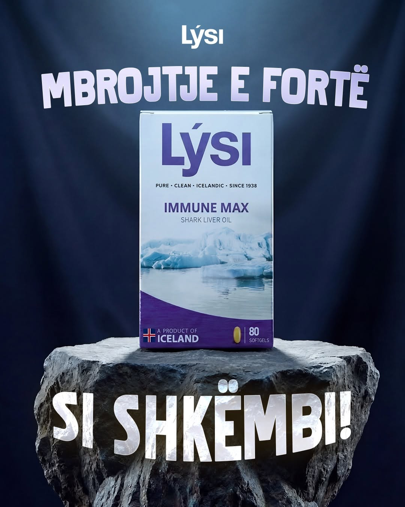
Maj — LYSI
11 postime brand-owned + 3 collab Reels (etiketuar REEL). Frekuenca është më e ulët se prilli (14 → 11 postime brand + 4 → 3 collabs).
Renditja sipas engagement — Instagram · Maj 2026
Total influencer engagement: 3,948 likes / 88 comments. Down from April's 5,035 likes — primarily because there were 3 collabs in May vs 4 in April. Per-collab engagement remained strong.
Meta Ads · May 1 — May 31, 2026 · 2 fushata · scale doubled MoM
Traffic shkalla u dyfishua (3,071 visits vs 1,493 në prill) me efikasitet të njëjtë (€0.051/visit). Lysi Message u rrit pak (108 → 111 conv) por CPR-i u rrit nga €0.71 në €1.05 (+48%) — frekuenca 4.12 sugjeron creative fatigue. Rekomandim: rifresko creative-in e Message dhe mbaj Traffic ashtu siç është.
Instagram followers — Lifetime
Audienca kryesore: 25–34 (~42%) dhe 35–44 (~38%). Të bashkuara ~80%. Femra 72.2% / Meshkuj 27.8% — më pak skewed se BIOS Line.
Top vendet: Albania 51.3%, Kosovo 16.2%, North Macedonia 6.9%, Germany 6.4%, Italy 5.8%. Albania ende dominon.
Hapat për qershor — re-energize creative
Maj kishte 3 collabs vs prill 4 — dhe engagement-i ra në përpjesëtim. Kthe planin në 4–6 collabs/muaj me Diola + Liridona + GoodyFoody + 1–2 të rinj. Mos lër muaj me më pak se 4.
Postimet brand-owned mesatare 7–8 likes në maj (vs 18 në prill). Po të njëjtit format — static product shots me background colored. Testo Reels të vegjël (15–30s) demonstrim produkti, behind-the-scenes, FAQ.
Tirana 24.7% vs Prishtina 4.7%. Audienca shqiptare është thelbi, por Kosova ka hapësirë të madhe rritjeje. Konsidero një fushatë gjeo-targetuar prishtinë-fokusuar me content të lokalizuar (shitësit në farmacitë e Kosovës).
BIOS Line bëri 378K views në një muaj duke kopjuar formatën e LYSI (2 Reels nga Diola). Tani LYSI ka nevojë të rinovohet — testo format-e të reja që mund të rikrijojnë moment-in viral të prillit (p.sh. user-generated content, before/after, testimonial Reels).